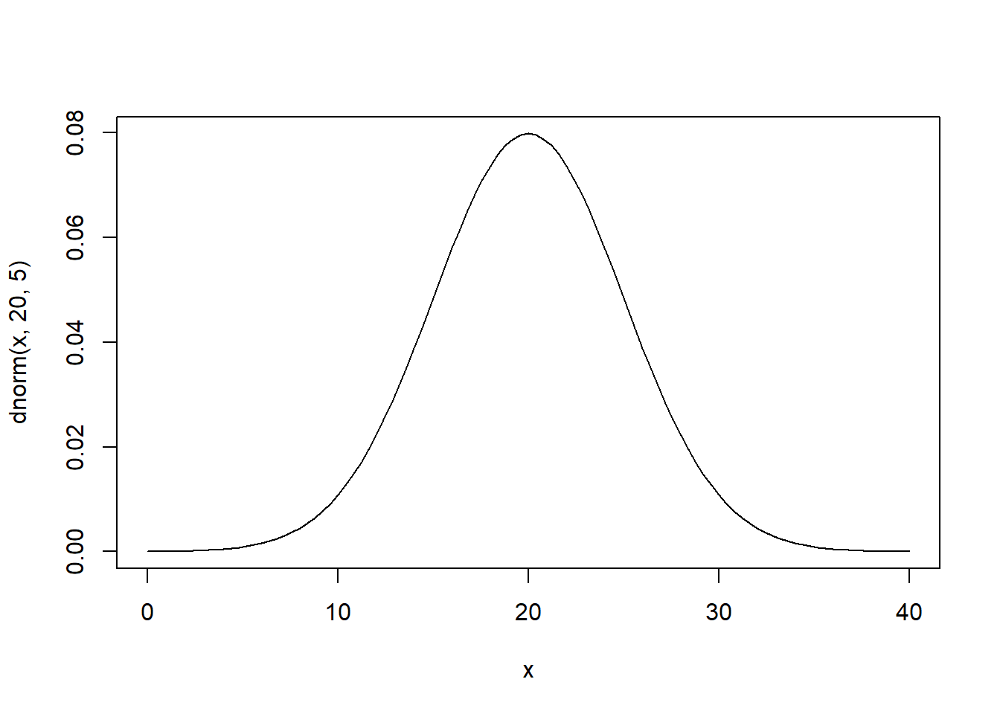
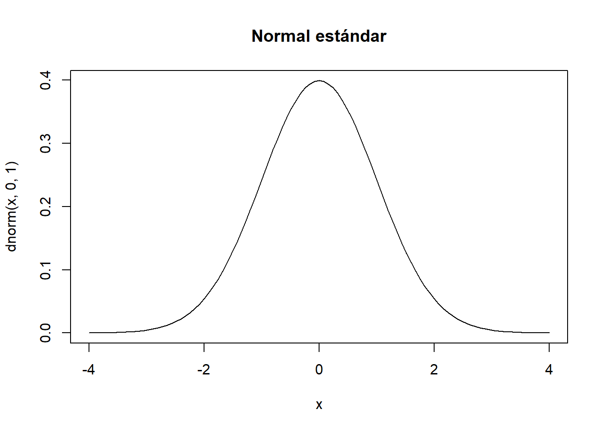

3 Distribución normal
\[f(x)=\frac{1}{\sigma \sqrt{2\pi}} e^{-\left(\frac{x-\mu}{\sigma}\right)^2}\]
curve(dnorm(x,20,5),xlim=c(0,40))
3.1 Distribución normal estándar
Sea
\[Z\sim N(\mu=0,\sigma=1)=N(0,1)\] Entonces, se dice que \(Z\) se distribuye como una normal estándar. Con su función de densidad:
\[f(z)=\frac{1}{\sqrt{2\pi}} e^{-z^2}\]
Se recurre a la normal estándar debido a que existen tablas de probabilidad construidas para esta, ya que la integración convencional de la función \(f(z)\) no es directa.
curve(dnorm(x,0,1),xlim=c(-4,4),main="Normal estándar")
\[P(Z<0)=0.5\]
El uso de la tabla: la tabla devuelve las probabilidades acumuladas hasta un punto \(t\)
\[P(Z<t)=\phi(t)\]
\[P(Z<1.5)=\phi(1.5)=0.9332\]
\[P(Z<0.5)=\phi(0.5)=0.6915\]
\[P(Z<-0.76)=\phi(-0.76)=0.2236\] \[P(Z< -1.56)=\phi(-1.56)=0.0594\]
\[P(Z< 2.89)=\phi(2.89)=0.9981\]
Cuando se pide este tipo de probabilidades:
\[P(Z>t)=1-P(Z\leq t)=1-\phi(t)\] \[P(a<Z<b)=\phi(b)-\phi(a), \quad b>a\]
\[P(Z>1.87)=1-\phi(1.87)=1-0.9693=0.0307\]
\[P(Z>1.5)=1-\phi(1.5)=1-0.9332=0.0668\] \[P(-1.89<Z<2.57)=\phi(2.57)-\phi(-1.89)=0.9949-0.0294=0.9655\]
Para trabajar sobre cualquier variable \(X\) que se distribuya normal y obtener sus probabilidades, es necesario hacer el proceso que se denomina estandarización:
\[Z=\frac{X-\mu}{\sigma}\] Así, \(Z\sim N(0,1)\).
Ejemplo, sea \(X\) que se distribuye como una normal con media \(\mu=24\) y desviación estándar de \(\sigma=4\), calcular las probabilidades:
\[P(X<30)=P\left(\frac{X-\mu}{\sigma} < \frac{30-24}{4} \right)=P(Z<1.5)=\phi(1.5)=0.9332\] \[P(X>29)=P(Z>1.25)=1-\phi(1.25)=1-0.8944=0.1056\] \[P(20<X<31)=P\left(\frac{20-24}{4} <\frac{X-\mu}{\sigma} <\frac{31-24}{4} \right)=P(-1<Z<1.75)=\]
\[=\phi(1.75)-\phi(-1)=0.9599-0.1587=0.8012\]
Ejercicio, sea X la altura en centimetros de un grupo de estudiantes, de tal forma que esta altura de distribuye de forma normal, con media 164 y desviación estándar de 10:
- si se elige un estudiante al azar, calcular la probabilidad que este estudiante tenga una altura mayor a 170.
- Suponer que existen 60 estudiantes, estimar cuántos estudiantes tendrán una altura entre 160 y 170
Solución, \(X\sim N(\mu=164,\sigma=10)\)
\[P(X>170)=P(Z>0.6)=1-\phi(0.6)=1-0.7257=0.2743\]
\[P(160<X<170)=P(-0.4<Z<0.6)=\phi(0.6)-\phi(-04)=\] \[=0.7257- 0.3446=0.3811\]
Qué pasara con 60 estudiantes? \(n*Pr(.)\)
\[n*P(160<X<170)=60*0.3811=22.866\approx 23\]